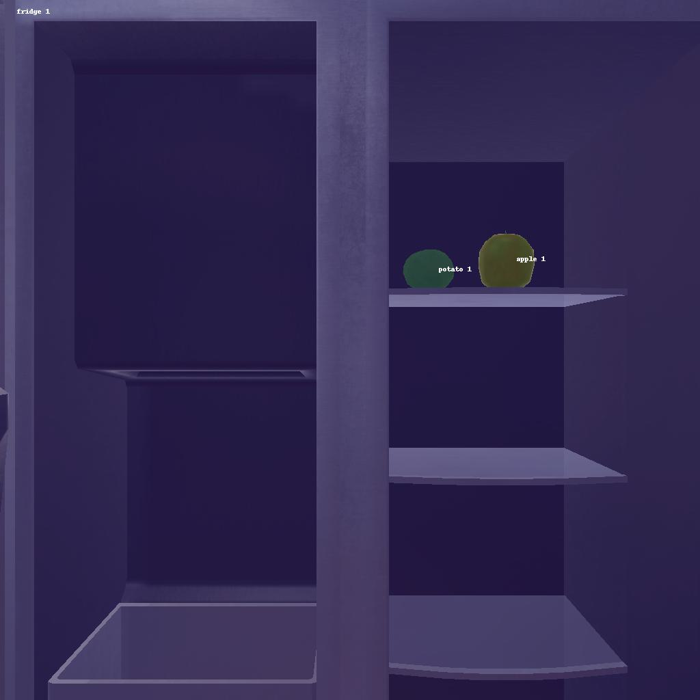

---------------------------------------------------------task: 12---------------------------------------------------------
--------------------------------------------------------------------------------------------------------------------------------------------------------------------
--------------------------------------------------------------------------------------------------------------------------------------------------------------------
Step:--------------------------------------------------------------------------6-------------------------------------------------------------------------------
----------------------------------------
VLM Prompt:
Image1:
Image2:
**Instruction**
1. Analyze the provided image to identify all visible household objects, focusing on those relevant to the task description "clean some tomato and put it in countertop."
2. Use the analysis of the image and the task hint "The agent must find an object of the desired type, pick it up, go to a sink or a basin, clean the object with a sink or basin, and then find the correct location to place it and put it down there. The agent does not need to use soap bottle or faucet to clean the object, and the agent just needs to do action that is "clean the object with the sink or sink basin"." to answer the question: what is the most reasonable action in the choices for the task description "clean some tomato and put it in countertop"?
4. Decide and write the answer using the template: The answer is: (i): , where i is the real number. If there is no desired object in the image, search every place based on **Initial Observation** to find the object. And if no one is exactly correct, choose a similar answer.
**Initial Observation**
You are in the middle of a room. Looking quickly around you, you can see cabinet (1-6), microwave (1), countertop (1-2), coffeemachine (1), toaster (1), sink (1), sinkbasin (1), fridge (1)
**Answer Choices**
(1): go to cabinet 2
(2): go to cabinet 3
(3): go to microwave 1
(4): go to cabinet 4
(5): go to cabinet 5
(6): go to cabinet 6
(7): go to countertop 1
(8): go to coffeemachine 1
(9): go to toaster 1
(10): go to countertop 2
(11): go to sink 1
(12): go to sinkbasin 1
(13): go to fridge 1
(14): open cabinet 1
(15): close cabinet 1
(16): examine cabinet 1
**Answer**
Let's think step by step by following the instructions.
----------------------------------------
----------------------------------------
Original Response:
Firstly, we need to find a tomato to clean and put it on the countertop. From the initial observation, we know that there are cabinets, a microwave, countertops, a coffee machine, a toaster, a sink, a sink basin, and a fridge in the room. Tomatoes are generally stored in fridges or sometimes on countertops if they are about to be used.
Looking at Image 1, which shows the inside of the fridge, we do not see any tomatoes, only a potato and an apple. Therefore, the fridge does not contain the desired object for the task.
Looking at Image 2, we see cabinets, but since we cannot see inside them, we cannot confirm if there are any tomatoes there. However, we can start by searching the cabinets since that is a common place where one might find a tomato if it's not in the fridge.
The most reasonable action from the choices provided would be to start opening the cabinets to search for a tomato. Therefore, the first step would be to go to one of the cabinets and open it. Cabinet 1 is labeled and is a reasonable place to start.
The answer is: (14): open cabinet 1.
----------------------------------------
----------------------------------------
>>> Refine Original VLM Response and Get Pure Action: open cabinet 1
----------------------------------------
-----------------------------------------------------------------
Running time: 12.486549377441406 seconds
Total Money: 5.445219999999998
-----------------------------------------------------------------
-----------------------------------------------------------------
Text Observation:You open the cabinet 1. The cabinet 1 is open. In it, you see nothing.
-----------------------------------------------------------------
UNSUCCEED